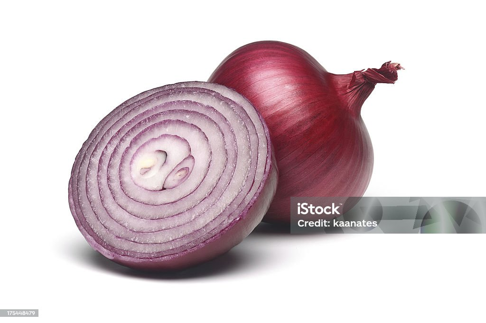

Onion is one of the oldest cultivated vegetables in the world,
known for its strong aroma, sharp flavor, and essential role in
cooking. It is believed to have originated in Central Asia,
particularly in the regions of Iran and Pakistan, where it
has been grown for thousands of years. From there, onions spread
to India, Egypt, and the Mediterranean, becoming a key ingredient
in many ancient cuisines. Nutritionally, onions are rich in
antioxidants, vitamin C, fiber, and beneficial plant compounds
like quercetin. These nutrients support immunity, heart health,
digestion, and help reduce inflammation, making onions both flavorful
and healthy.